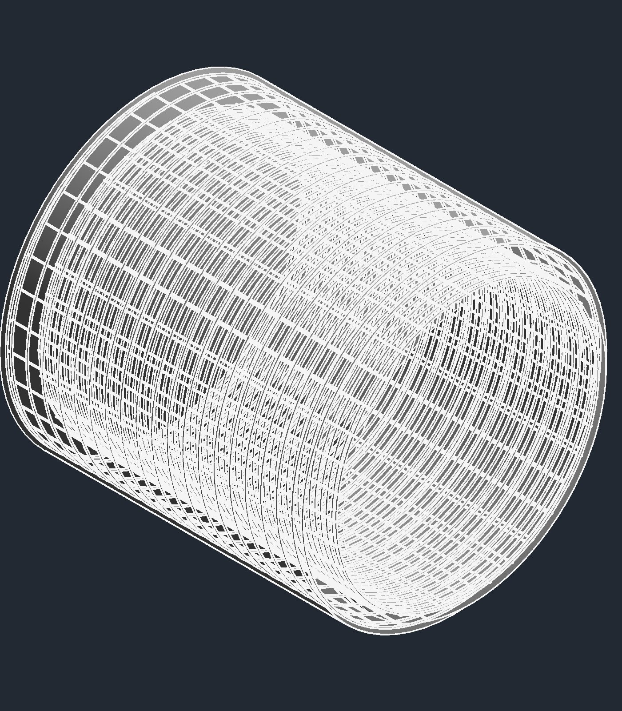
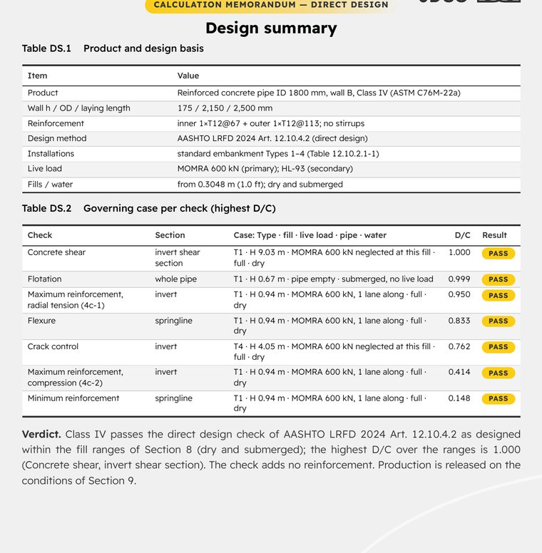
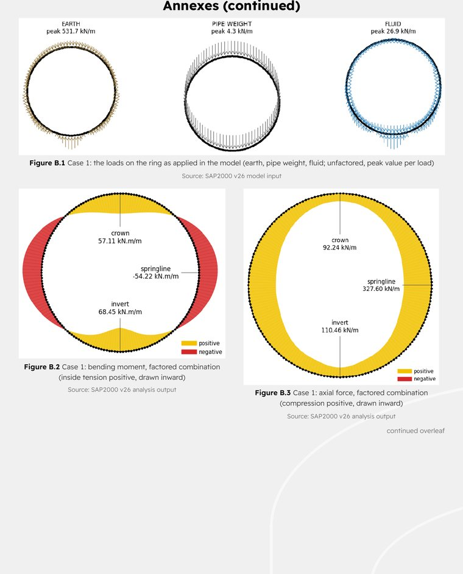
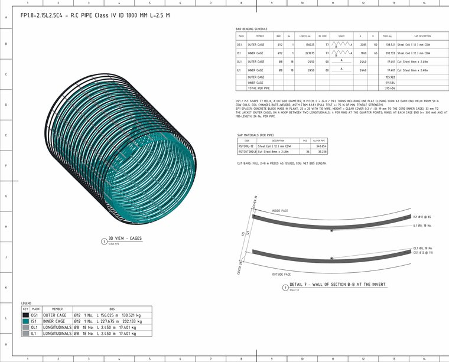
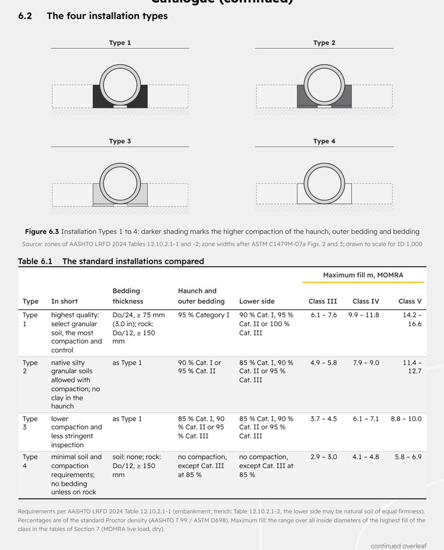
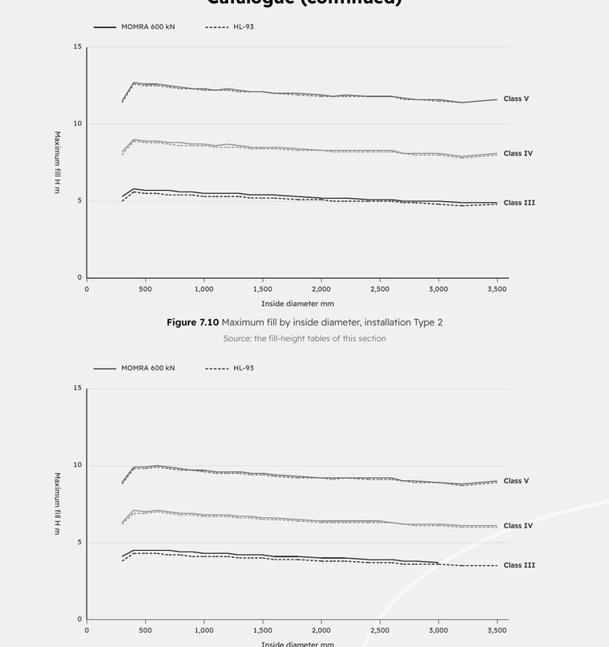
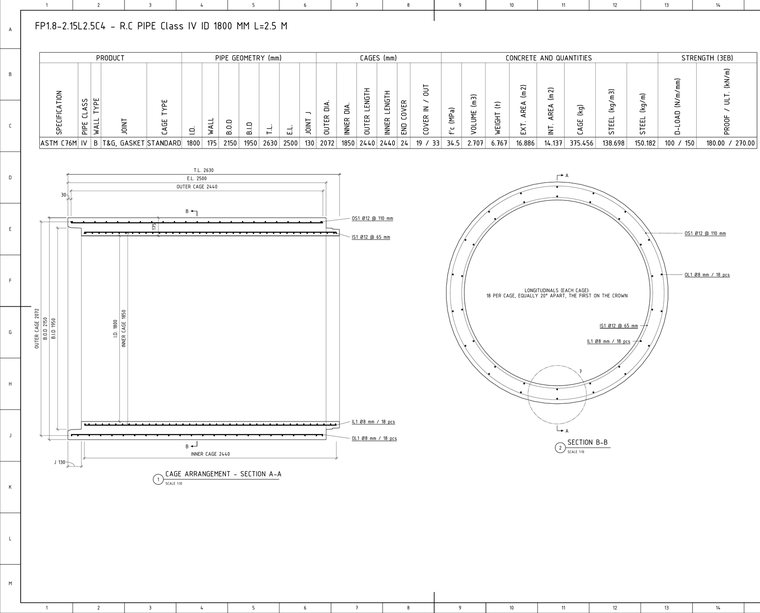
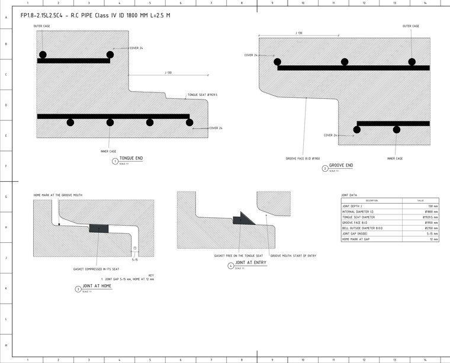
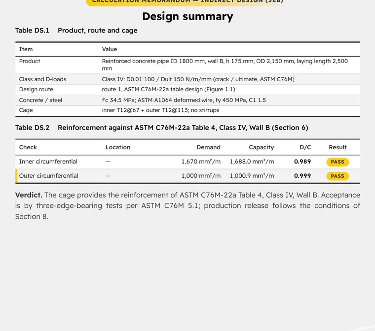

RC pipes: a standard range designed to code
ASTM C76M Classes III to V, AASHTO LRFD indirect and direct design
A pipe range must carry earth, traffic and water loads in four installation types, prove its class in the three-edge-bearing test, and stay consistent across every size, class and cage.
How it works
An order line names a diameter, a class and an installation. The engine takes the cage from the standard range, checks it by indirect and direct design, and writes the memo, the drawing set and the bar bending schedule for that exact product.
What I built
- Design engine for ASTM C76M Classes III/IV/V to AASHTO LRFD 2024 §12.10: indirect design with installation Types 1-4, and direct (Heger) design on a closed-ring frame.
- Loads: earth, fluid, HL-93 and MOMRA vehicles with live-load distribution, dry and submerged states. Checks: flexure, crack control, diagonal tension, radial tension, steel limits, stirrups, flotation.
- Verified against Eriksson Pipe and a SAP2000 ring model; three-edge-bearing proof testing to ASTM C497 written into the inspection and test plan.
- Outputs per product: indirect and direct memos, a Revit drawing set, BBS and an 86-page catalogue.
78standard products, 26 moulds × 3 classes
0.04%difference in the Eriksson Pipe cross-check
2,391engine tests at release
86page technical catalogue
Python design engine, SAP2000, Eriksson Pipe, Revit (C#), Excel

Real samples (9)








